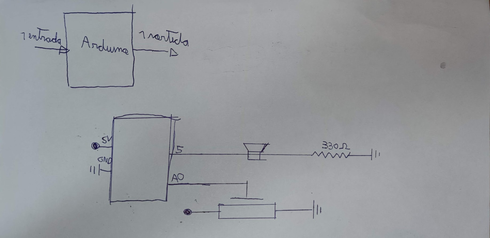

En la següent imatge es mostra com s'han de connectar els diferents elements entre si:
Copiar codi
El codi que es necessita per a fer-ho funcionar es mostra a continuació
const int LDR = A1;
const int altaveu = 5;
int frequencia = 0;
int frequenciaAntiga = 0;
int altaveuEnces = 0;
int serie;
void setup() {
pinMode(altaveu, OUTPUT);
Serial.begin(9600);
}
void loop() {
if (Serial.available() > 0) {
serie = Serial.read();
if (serie == 'S' || serie == 's') {
altaveuEnces = 1;
} else if (serie == 'N' || serie == 'n') {
altaveuEnces = 0;
noTone(altaveu);
}
}
if (altaveuEnces == 1) {
frequencia = analogRead(LDR) + 262;
Serial.println(frequencia);
delay(10);
if (frequencia != frequenciaAntiga) {
tone(5, frequencia);
frequenciaAntiga = frequencia;
}
}
}